One binary
Prompts and skills are embedded. make cross builds
linux/darwin × amd64/arm64. The boxes where lab work actually happens rarely have a
JS runtime, and you should not have to install one to triage a binary.
reverse ops deck · v0.1.1 · go 1.22
0xAF-Re drives a planner model and an executor model over 24 local tools — triage, entropy, carving, symbols, APK inspection, Frida scaffolds, external RE tool wrappers — plus workflow modes that route cyber/CVP subscriptions directly, break ordinary-provider work into local evidence packets, and queue your next prompt while the current turn runs. It draws the turn while it runs, so you can see where the time went and stop it when it goes somewhere useless. One static binary. No runtime to install.
go install github.com/overkazaf/re-agent/cmd/0xaf@v0.1.1
run_command call was still running.
why it is built this way
Reverse engineering is a long conversation with a binary. Two things make an agent useful for it: tools that run on your machine against the real artifact, and enough visibility that you trust what came back. Everything else in this project follows from those two.
Prompts and skills are embedded. make cross builds
linux/darwin × amd64/arm64. The boxes where lab work actually happens rarely have a
JS runtime, and you should not have to install one to triage a binary.
A planner reasons about the target; an executor drives the tools. Neither seat is
bound to a vendor — any of the eight providers can take either one. The default is
your local codex and claude
CLIs in tmux because it reuses logins you already have, but
grok-build is a first-class CLI provider too, and the
seats mix freely: a local CLI planning while a direct API executes, or the reverse.
Swap either one mid-run with /planner or
/executor — no restart, no config edit.
^C cancels the HTTP request, kills the tmux session, and signals tool
subprocesses in their own process group. No orphaned
objdump chewing a core after you walked away.
Reads stay inside the workspace. Writes are off until you pass
--write. Network and credential-shaped commands stop and
ask. Destructive shell forms are refused.
the turn, drawn
The diagram animates above the HUD while the turn runs — packets move
along the wires, nodes light up as they take part, and the loop closes back into the
context that feeds the next request. The task list hangs off
[you], because the plan is the operator's view of the work.
The trace lands in the scrollback and stays there, stamped from the start of the turn, so a finished run reads like a packet capture. Duration bars share one scale per turn — the slowest request fills the bar — which makes the shape of a turn readable at a glance: where the time went, how many round trips it took, which tool was slow.
# pick your layers; the choice is saved /flow full diagram + trace (default) /flow flow diagram only /flow trace trace lines only /flow off neither — the plain tool tree comes back # while a turn is running, type the next task and Enter to queue it /queue list /queue edit 2 triage ./fixed.apk /queue cancel 2 /tasks collapse /tasks expand
The diagram hides itself below 46 columns and in non-TTY output; the trace degrades to plain text without escape sequences, which is what you want when piping a run into a log.
boot screen
Runtime, tmux, a shallow magic-byte triage of the workspace, provider auth, tool inventory, active policy. The boot screen doubles as the answer to "is this thing actually wired up right now?"
routing
Under --role auto each prompt is routed by shape:
execution-flavoured prompts ("run", "inspect ./", "读取") go to the executor, everything
else to the planner. You can override per session or per prompt.
| control | effect |
|---|---|
--role planner | analysis, exploitability reasoning, solve plans |
--role executor | tools, file inspection, summarizing |
--role researcher | background research, source synthesis, prior art |
/agent <name> | pin one provider for the next prompts |
/model <provider> <model> | override the concrete model for this session |
/planner · /executor · /researcher | change a role provider mid-session |
/prompt edit researcher | edit per-role system prompts without rebuilding |
/effort codex high | reasoning effort, for backends that take one |
--smoke use.
workflow modes
Workflow mode is explicit: the default is off, so ordinary
prompts are sent as-is. When turned on, 0xAF-Re shapes authorized reverse-engineering
requests before they reach the selected provider.
| mode | when to use it | what it does |
|---|---|---|
off | default | no workflow wrapper |
auto | mixed machines | detects GPT Cyber / CC CVP-style provider markers, otherwise picks caveman |
specialist | cyber or CVP route configured | plans first, then runs skills and local tools while preserving evidence |
caveman | ordinary providers | splits the task into bounded local evidence packets and one small verification at a time |
/workflow auto use specialist if a cyber/CVP route is configured /workflow caveman local evidence packets: type, strings, entropy, imports, skill, check 0xaf --workflow specialist -p "triage ./app.apk"
Caveman mode is not translation, classical Chinese, ciphering, euphemism, or prompt laundering. It keeps the work plain, local-first, and artifact-focused, and it refuses only the unsafe part if a request moves outside authorized lab or CTF analysis.
marketing downloads
These PNGs are rendered into the page so you can preview them, then click any image or button to download the original file. The vertical cards are 1080×1440, and the 1280×640 banner includes the group QR code.
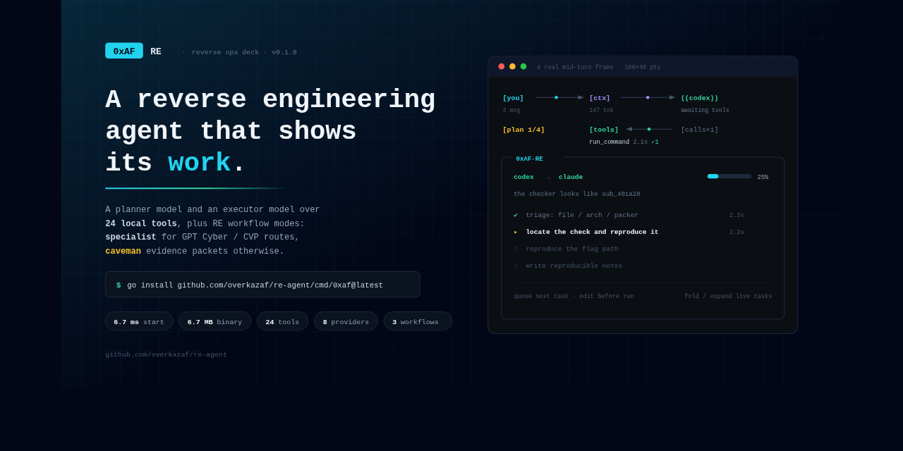
download banner PNG with QR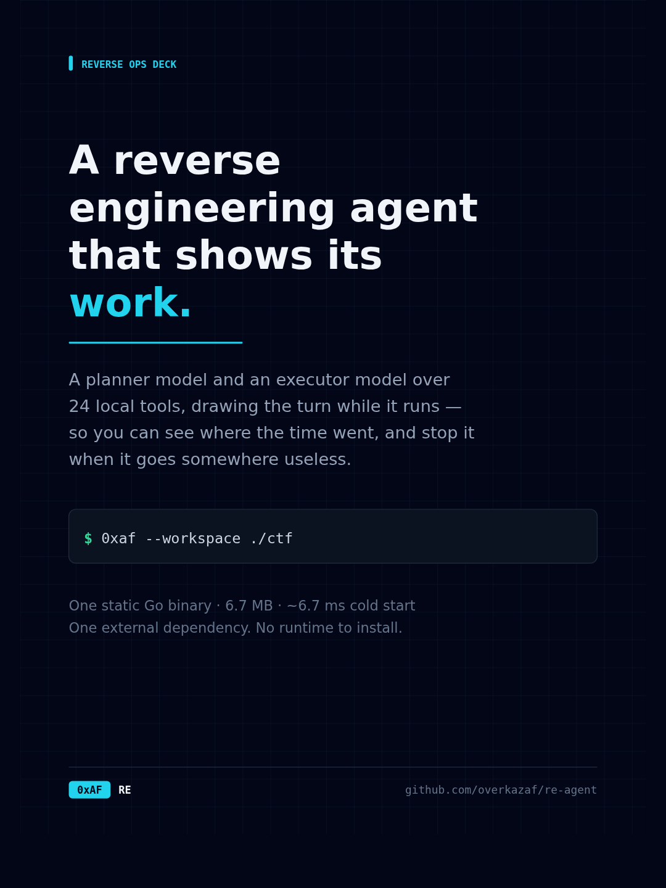
01 cover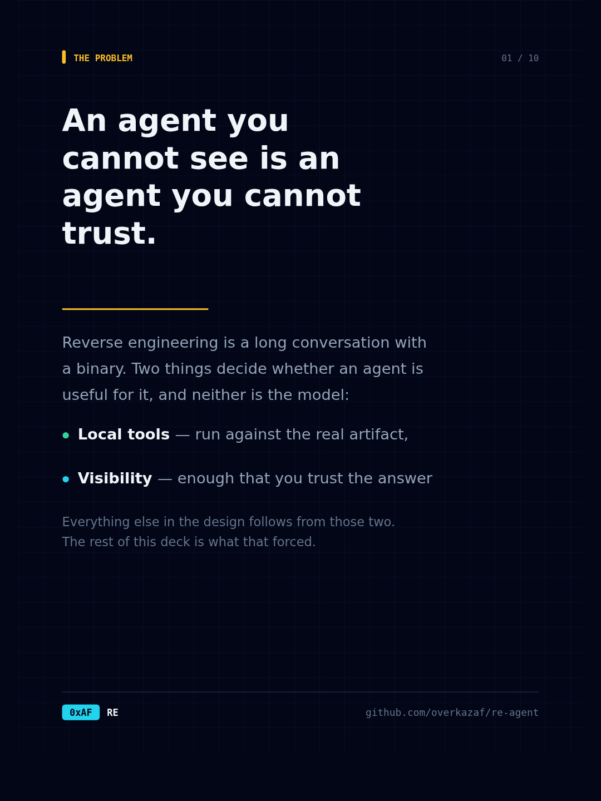
02 problem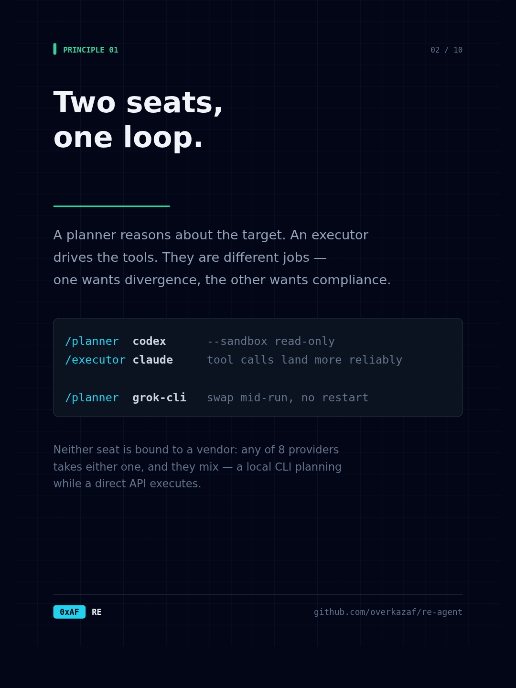
03 two seats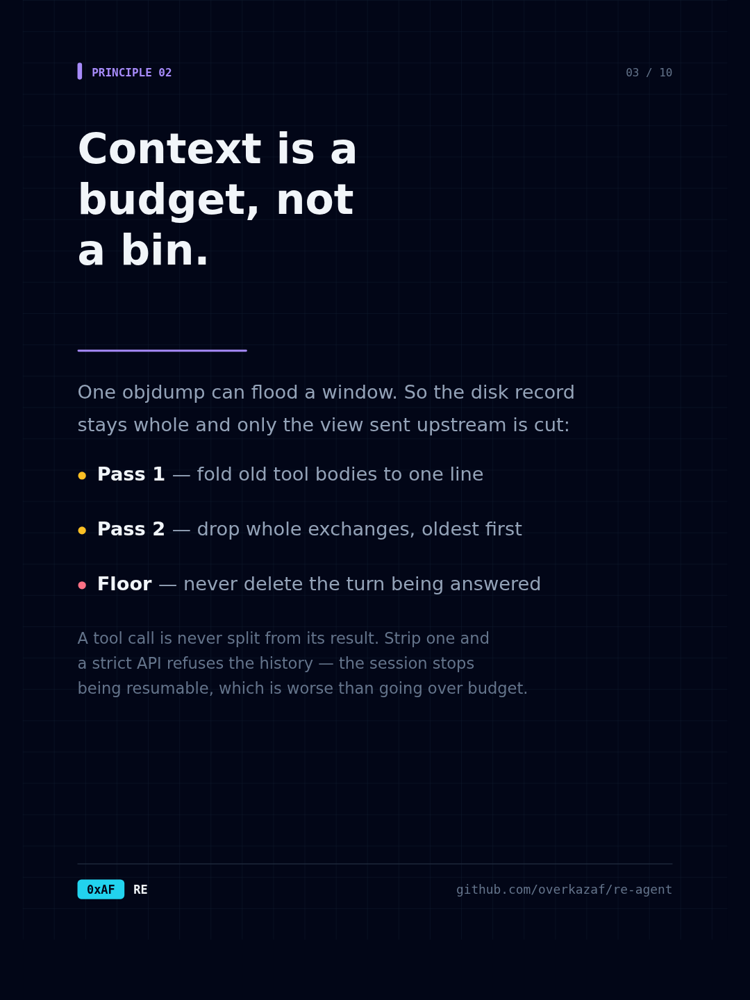
04 context budget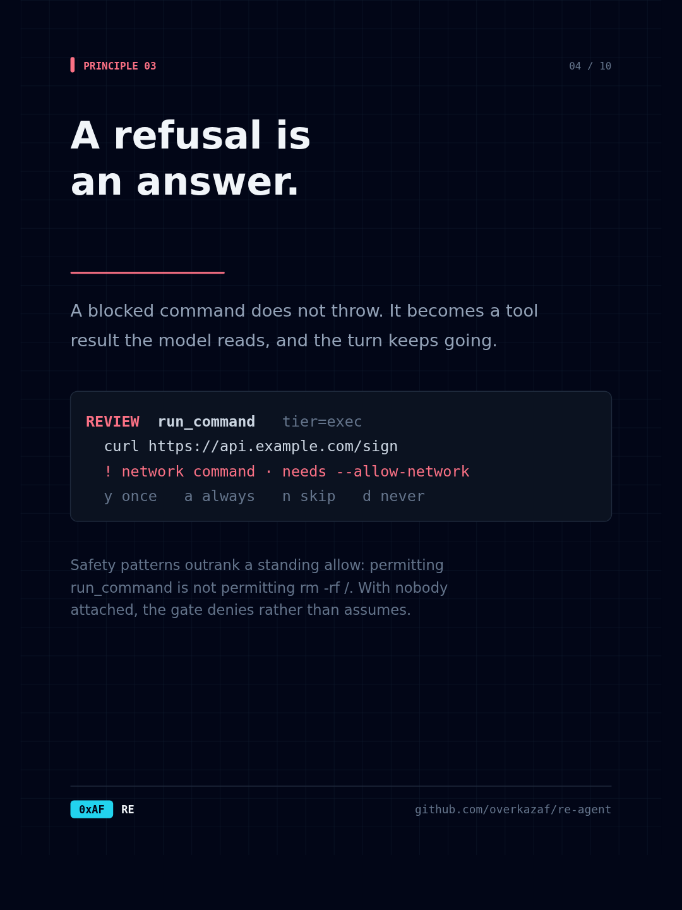
05 refusal handling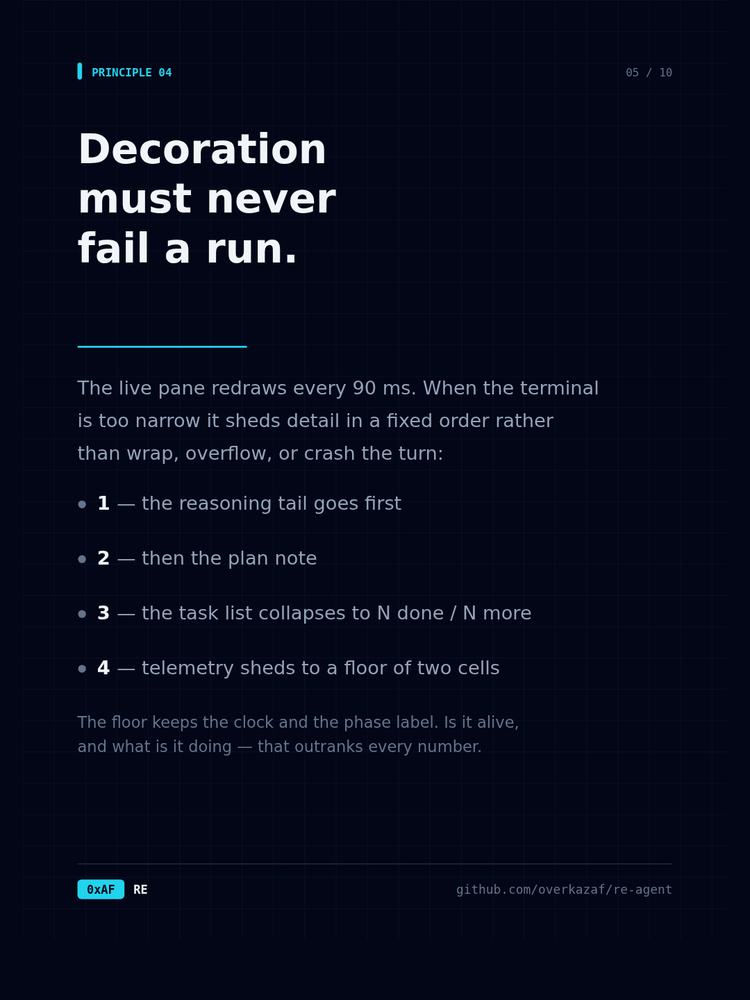
06 live pane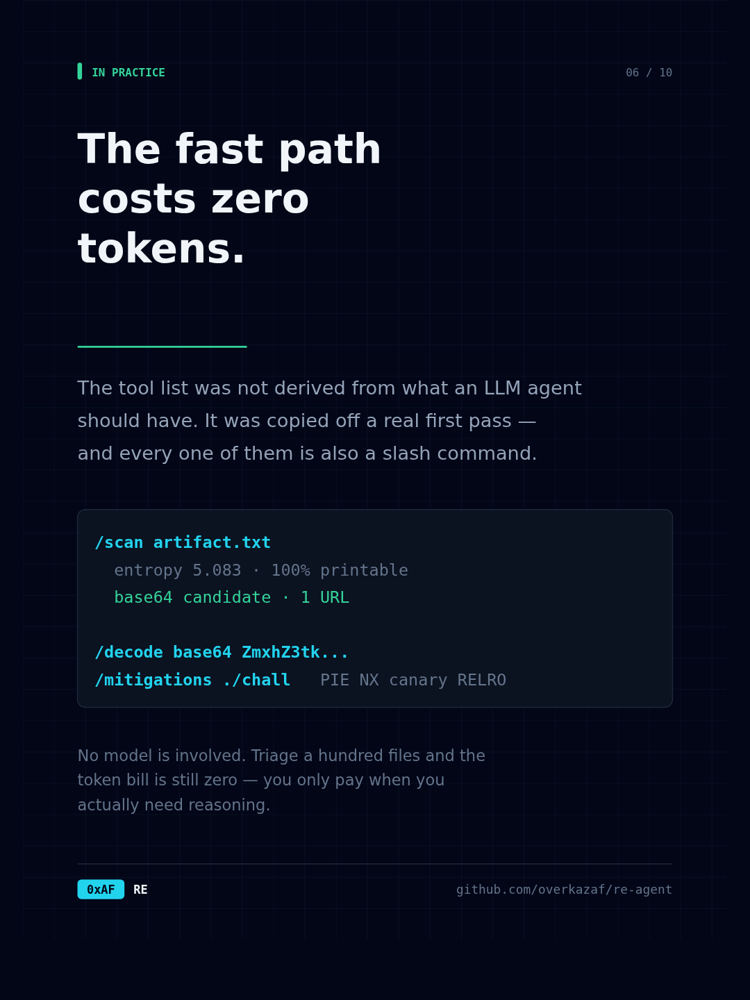
07 slash tools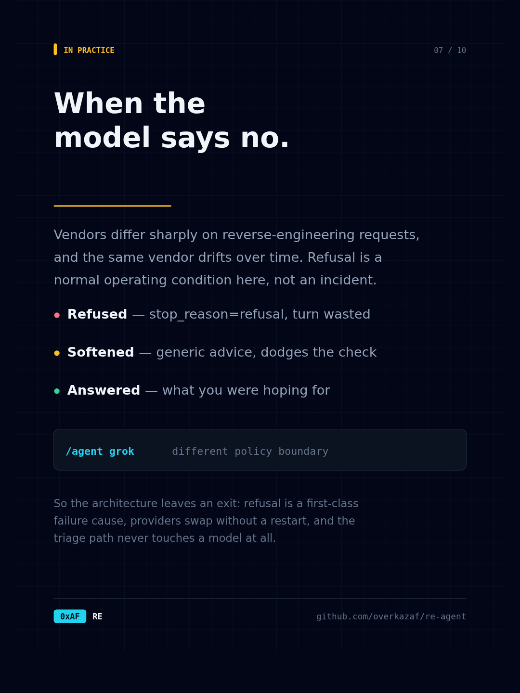
08 model says no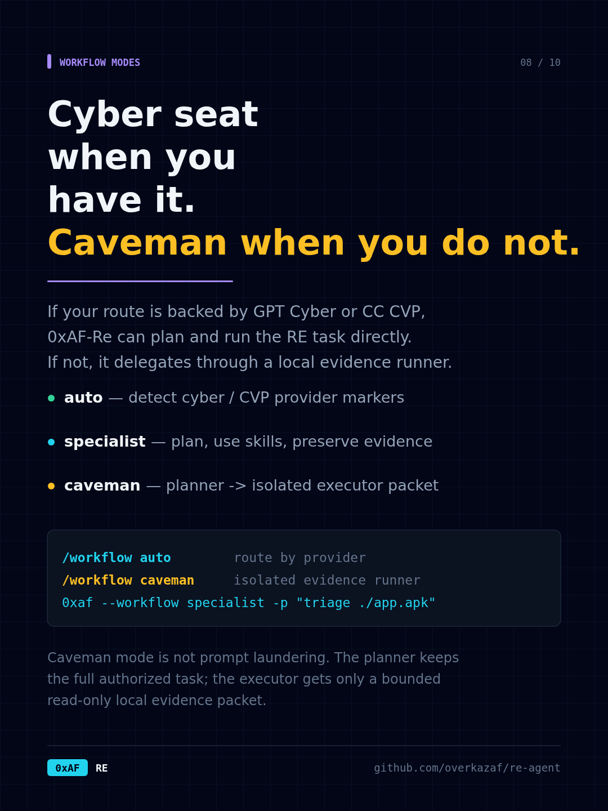
09 workflow modes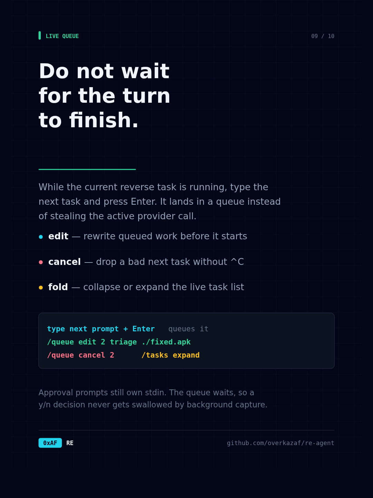
10 live queue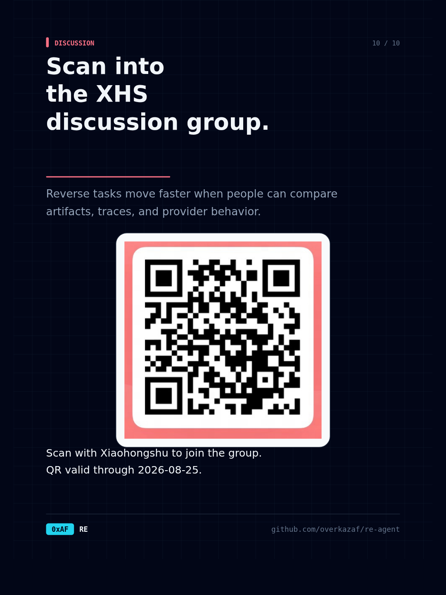
11 group QR card download QR codedownload workflow SVG download queue SVG download group SVG download full XHS QR
the arsenal
| group | tools |
|---|---|
| files | list_files · read_file · write_file · grep |
| shell | run_command |
| binaries | file_info · strings · hexdump · hash_file · extract_symbols · binary_mitigations |
| CTF | ctf_triage · ctf_decode · entropy_scan · find_bytes · carve_artifacts |
| external | reverse_toolkit |
| mobile | apk_inspect · frida_hook_template |
| knowledge | list_skills · read_skill · knowledge_search · knowledge_read |
| plan | update_plan |
Every analysis tool is also a slash command, so the fast path costs no tokens at all. This is usually how a session starts.
/scan ./chall type, magic, hash, entropy, string signals, next steps /mitigations ./chall PIE / NX / canary / RELRO / stripped / dangerous imports /entropy ./chall sliding-window entropy — finds packed or encrypted regions /carve ./blob embedded ELF/PE/ZIP/DEX/PNG/PDF/SQLite/Mach-O /findbytes ./chall flag{ offsets with hex+ascii context; hex needles too /decode base64 ZmxhZ3s... base64/hex/url/rot13/xor, or auto to try them all /apk ./app.apk dex, native libs, packer and framework fingerprints /retool inventory check radare2, JADX, Ghidra, Unicorn, unidbg and friends /retool radare2 info ./chall fixed-action wrapper around deeper local RE tools /hook java com.a.Crypto sign a Frida hook scaffold for the method you name
--max-output keeps head and tail, and the full text is
written to an artifact file the model can read deliberately.
Any stdio MCP server's tools join the same registry, with the same approval gate and the same output budget. For reverse engineering the obvious one is ida-pro-mcp, which puts decompilation, xrefs and renaming in reach of the agent.
{ "mcpServers": { "ida": {
"command": "python3",
"args": ["-m", "ida_pro_mcp.server"],
"timeoutMs": 120000
} } }
They appear as mcp__ida__<tool>. A server that fails to
start is reported at boot and skipped, never fatal. /mcp shows
the state of each one.
safety
Two inputs decide whether a call runs: the tool's tier and the session's mode. On top of
that, a command tripping a safety pattern always asks — that is the one case an
"always allow" does not silence, because allowing
run_command is not the same as allowing
rm -rf /.
| mode | auto-approves | asks |
|---|---|---|
| yolo | everything | nothing |
| safe default | every tier | commands tripping a safety pattern |
| write | read, write | exec tools, and safety patterns |
| always-ask | read | everything else |
--print, a pipe,
CI — the prompt becomes a refusal that states the reason.
context, sessions, interrupts
Sending everything is how an RE session dies: one objdump -d
can outweigh the rest of the conversation. What goes upstream is trimmed to the provider's
budget in two mechanical passes — old tool-result bodies are elided first, their first
line surviving as a pointer, then whole oldest exchanges are dropped behind a
[context compacted] marker.
A tool call is never separated from its results, because strict chat APIs reject that shape. The same invariant is why an interrupted turn still records a result for every call it issued: the transcript has to stay resumable.
/context ≈12400 tokens of 48000 budget (25%) · 42 messages /compact ask the model for a briefing and restart the working history from it 0xaf --sessions list recent sessions 0xaf --continue resume the most recent 0xaf --resume 2026-07-28 an id, an id prefix, or a path
Sessions are append-only JSONL. A truncated final line — killed mid-write — and tool calls whose results never landed are both repaired on load.
skills & knowledge
Project-local workflows live in skills/<name>/SKILL.md.
They are loaded at startup, summarized into the system prompt, exposed as tools, and can
be forced for a single turn. The checkout now ships a broader RE set: CTF first pass,
APK/Frida, native pwn/RE, web/WASM crypto, radare2, Ghidra, JADX, Unicorn, unidbg,
and imported local playbooks.
/skills /skill android-apk-frida inspect this APK and propose hooks
A local markdown corpus can be indexed and queried without leaving the REPL. Answers come only from the retrieved entries, cite the entry ids they used, and if the model cites an id that does not exist the page says so instead of quietly dropping it — a knowledge tool that invents sources is worse than one that cites none.
go run ./cmd/import-knowledge ~/notes/re /know frida ssl pinning answer from local knowledge, with sources /know raw frida ssl raw index hits, no model call /know read <entry-id> read one entry in full
install & quickstart
# 1 — install go install github.com/overkazaf/re-agent/cmd/0xaf@v0.1.1 # or: git clone https://github.com/overkazaf/re-agent && cd re-agent && make build # 2 — check the wiring, offline: no key, no network, no CLI login 0xaf --smoke # 3 — check what it can actually authenticate as 0xaf auth status # 4 — open a workspace 0xaf --workspace ./ctf
The default route uses your local codex and
claude logins through tmux. Prefer a direct API? Export a key
and name the provider:
export DEEPSEEK_API_KEY=...
0xaf --planner deepseek --executor deepseek --workspace ./ctf
# or store one locally, in ~/.0xaf-re-agent/secrets.json
0xaf auth login claude-api
A REPL line starting with ! runs in the workspace under the
same policy. Output streams live and lands in the transcript, so the next prompt can
refer to what you both just saw.
run_command · ^C kills the child, not the REPL.TAB completes commands and their arguments; a live palette
appears under the prompt as you type; ↑↓ walks history that
persists across sessions.
verification
The tests pin the parts that are easy to break silently: the context-budget invariant, the plan tracker's no-op suppression, the CLI task-table binding rules, the approval matrix, and the HUD's width and height contract — a single over-wide line would desynchronise the in-place redraw for the rest of the session.
Architecture diagrams · Architecture deep-dive · source · more usage
{kind=link}
{kind=link}
{kind=link}
{kind=link}
{kind=link}
{kind=link}
{kind=link}
{kind=link}
{kind=link}
{kind=link}
{kind=link}
{kind=link}
{kind=link}
{kind=link}
{kind=link}
{kind=link}